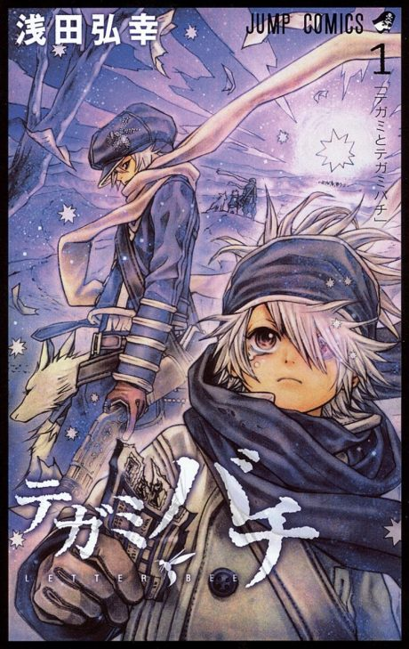

Letter Bee
テガミバチ
After the anime, read the manga from Chapter 56.
7.2AniList score
—Animeter, no votes yet
50episodes, 2 seasons
Rate it or report where you stopped
Is it worth pushing through?
Built from what visitors report across all 2 seasons (50 episodes).
Loading reports…Checking what other people said about this one.
Sign in above with your email to add your report.